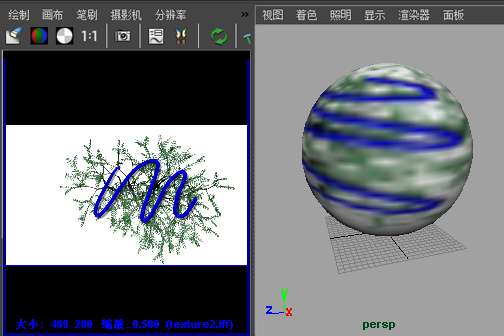

虽然可以通过直接在已应用纹理的表面上绘制，使用“3D 绘制工具”(3D Paint Tool)来修改纹理，但是也可以在画布中修改纹理，然后立即查看表面上的效果。

修改应用到表面的纹理
- 将文件纹理应用到表面。有关详细信息，请参见将 2D 或 3D 纹理映射到材质。
- 如果尚未打开 Hypershade，请打开它（）。
- 通过使用鼠标中键，将已应用的文件纹理拖动到画布上。
提示：
若要在 Maya 纹理上绘制（例如，棋盘格或分形），请选择纹理所在的表面，然后在 Hypershade 中，按住 Shift 键选择纹理。仍在 Hypershade 中，选择。现在，将已转化的文件纹理拖动到画布上。
- 选择“画布 > 保存”(Canvas > Save) >
 ，然后禁用“保存 Alpha”(Save Alpha)。
，然后禁用“保存 Alpha”(Save Alpha)。
- 将 Paint Effects 设置为在每个笔划之后保存画布（，或者单击工具栏上的文件夹图标）。
- 更改布局以同时显示画布和视图的场景（例如，）。
- 在场景视图中，启用“硬件纹理”(Hardware Texturing)（）。
提示：
若要提高纹理的显示质量，请打开着色器的“属性编辑器”(Attribute Editor)，展开“硬件纹理”(Hardware Texturing)，然后将“纹理”(Texture)分辨率更改为所需的设置。在 Windows 中，可能需要将质量设定为除“默认值”之外的值才能看到纹理更新。
- 在画布上绘制（请参见在画布上绘制）。每次释放鼠标按钮时，纹理会在将它应用到的表面上更新。
提示：可以绘制无法通过“硬件纹理”(Hardware Texturing)查看的属性（例如，凹凸、白炽度、透明度），并会看到通过使用 IPR 将该纹理应用到的表面上的效果。
- 将纹理指定给着色器的所需属性，然后将着色器应用到表面。有关详细信息，请参见将材质指定给曲面。
- 在“Hypershade”中，使用鼠标中键将纹理节点拖动到画布上。
- 将“Paint Effects”设定为在每个笔划之后保存画布。
- 执行表面的 IPR 渲染，然后选择要查看的区域。有关详细信息，请参见关于交互式真实照片级渲染 (IPR)。
- 在画布上绘制。